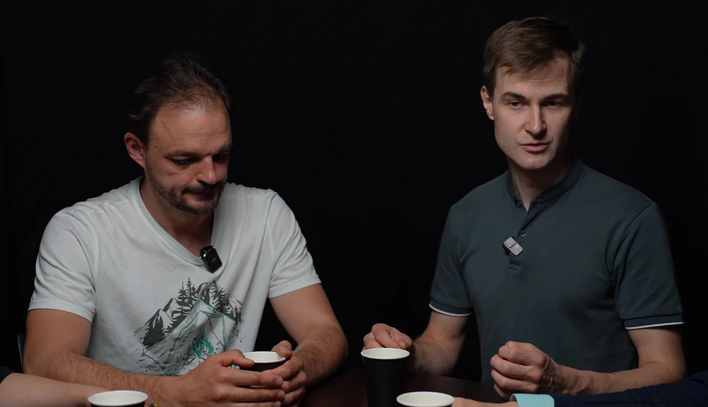

Выездной тренинг
За один день у вас на месте команда отработает на манекенах остановку сердца, анафилаксию, обморок и удушье — по ролям
Алексей Старков, врач-анестезиолог — фрагмент подкаста «Беда не выбирает, где случиться: первая помощь без мифов»
Смотреть подкаст целикомСлово инструктора
Экстренные ситуации в клинике случаются редко — поэтому без регулярной практики знания уходят, и в нужный момент команда теряется
Почему знания выветриваются — редкое событие не держится в памяти без отработки
Кто за это отвечает — руководитель, который бережёт имя клиники и своих сотрудников
Что мы делаем — приезжаем и тренируем команду в её же помещениях
1 минута
Для кого тренинг
Экстренная ситуация одинаково внезапна в стоматологическом кресле и в цеху — отличаются только сценарии, под которые мы настраиваем программу
пациент может потерять сознание или дать анафилаксию прямо в кресле, а команда давно не отрабатывала это руками
нужны свои сценарии, и мы добавляем их в программу
разные смены и новые сотрудники, у каждого своя последовательность действий
сотрудник упал в цеху или в офисе, а обучение было только на слайдах
хочется понять, где у команды слабые места, раньше, чем это покажет реальный случай
Результат
Сотрудники уходят с отработанными действиями и алгоритмами, руководство — с экспертным взглядом на готовность команды
Алгоритмы действий — электронные схемы по каждому состоянию, их можно распечатать для кабинета
Сертификаты участия — электронные, на каждого сотрудника
Удостоверение о повышении квалификации — по запросу, через партнёрскую образовательную организацию с лицензией
Экспертное резюме для руководства — наблюдения по ролям, оснащению и логистике помощи
Слабые места системы — что проявилось в ходе тренинга, названное прямо
Рекомендации по следующему шагу — что усилить в оснащении, ролях и практике
Программа повышает управляемость экстренного реагирования и не является гарантией отсутствия клинических инцидентов
Как работаем
узнаём профиль клиники или предприятия, состав команды и оснащение
10–15 минутпредлагаем конфигурацию под ваши сценарии и называем стоимость
согласуем день, участников и где развернуть практические станции
разбор алгоритма, демонстрация, практика на станциях и командные сценарии
6–8 часовалгоритмы, сертификаты и экспертное резюме для руководства
До 10–12 участников на одного инструктора, группу больше 20 человек обсуждаем отдельно
Программа
Каждый блок идёт по одной схеме: короткий разбор алгоритма, демонстрация, практика на станциях и командный сценарий
Детский приём и седация — добавляем по итогам брифа. Для предприятий — программа первой помощи без лекарственных препаратов, под ваши риски
кто что делает в первые минуты, первичная оценка по ABCDE, укладки, вызов и встреча скорой
Инструменты: план помещений клиники, укладкиНа руках: распределённые роли и маршрут оснащения
компрессии, вентиляция мешком Амбу, работа с дефибриллятором, командный сценарий
Инструменты: манекены, мешок Амбу, учебный дефибрилляторНа руках: отработанная реанимация командой без пауз
распознавание, введение адреналина, кислород, противошоковая укладка, установка периферического катетера
Инструменты: противошоковая укладка, тренажёр для инъекцийНа руках: разобранный состав укладки и назначение препаратов
обморок, судороги, гипогликемия, признаки инсульта, устойчивое боковое положение
Инструменты: глюкометр, пульсоксиметр, тонометрНа руках: действия до приезда скорой
бронхоспазм, попадание инородного тела или стоматологического материала, приём Геймлиха
Инструменты: тренажёр для отработки удушьяНа руках: освобождение дыхательных путей своими руками

Кто проводит
Алексей Старков · врач-анестезиолог
Объясняет спокойно, понятно и без лишней теории. Знает, как выглядят первые минуты критической ситуации изнутри, и учит команду действовать в них по ролям
Вместе с ним ведёт Павел Иванов — специалист скорой медицинской помощи с практическим опытом работы в экстренных ситуациях.
Честно о границах
Мы учим команду действовать в первые минуты. Всё остальное называем прямо
Стоимость и вопросы
Короткий бриф на 10–15 минут, после него — программа и расчёт
Получить расчёт в ТелеграмСледующий шаг
Экстренная ситуация не назначает дату. Тренинг — назначает: выберите день, когда команде удобно
Бриф 10–15 минут, ни к чему не обязывает. Удобнее MAX — ссылка ниже
Написать в MAX. Вопросы до заявки — на почту medical@training-team.ru или по телефону +7 (985) 966-52-89
Выездные тренинги по экстренной помощи для клиник и предприятий